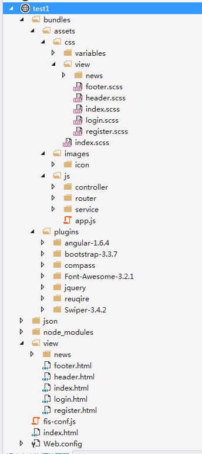

1. 介绍
开发环境搭建：
- Node
- FIS3
框架知识点：
- AngularJS
- angular-ui-router
- requirejs
- sass
- IIS-urlrewrite
Demo源码：
发布命令(适合发布部署)：
fis3 release prod -d 需要发布的目录
监听命令(适合开发阶段):
fis3 release prod -wLd 需要发布的目录
2. 目录结构

├─ test1 #项目名称根目录
├─ bundles #资源目录
├─ plugins #第三方插件
├─ assets #资源文件夹
├─ css #样式文件夹,存放scss、css等样式表
├─ variables #存放sass、less等定义的变量
└─ .scss #sass样式文件
├─ images #图片文件夹
├─ icon #存放小图标、icon等
└─ .(png\jpg) #图片文件
├─ js #脚本文件夹
├─ controller #存放ng控制器
├─ router #存放ui-router路由文件
├─ service #存放ng服务等文件
└─ app.js #项目入口文件
├─ view #存放页面文件，如：路由页面，ng组件页面等
├─ news #存放新闻相关的页面，如：新闻列表，明细页
└─...html #页面
├─ index.html #项目起始页
├─ json #一些json模拟后台接口的假数据
├─ node_modules #node的一些插件，用于fis3自动化
├─ fis-conf.js #FIS3配置文件
├─ package.json #fis3构建所需的插件清单
└─ web.config #IIS配置文件
3. 详解
拿到整个demo可能不知道从哪里入手，下面小节将详细一步一步的解释如何开始入手看懂整个demo。
3.1. web.config之重写IIS-URL
因为项目采用了angular框架，它是一个（SPA应用程序）。
并且采用了angular-ui-router的html5模式路由，是的URL对SEO的友好性。
但是，项目最终需要部署在IIS服务器上，它们之间路由将会有冲突，所以需要重写IIS的路由来保证NG的正常使用。
其它服务器，如：nginx等，可以自行百度配置。
具体配置请查看web.config,
此外还需要安装urlrewrite，否则无法重写IIS路由
3.2. index.html之项目起始页
作为SPA应用程序，整个URL是不会刷新的。所以：
样式文件，可以全部在index页面上引用，最终会通过FIS3进行打包压缩。
脚本文件，通过引入requirejs来达到依赖加载，FIS3同样会根据AMD的依赖规范来压缩打包。
index页面永远只会依赖app入口文件和router路由，其他功能都通过ui-router多视图路由来完成
3.3. app.js之项目入口文件
作为整个项目的入口文件，它需要干的事只有一件。
创建项目模块并启动它
3.4. router_map.js之路由表
项目的路由表，它只需要把拆分的子路由全部加载。
3.5. xx_router.js之子路由
通过前面几步之后，起手架已经搭好了。接下来就是根据：
子路由来加载不同的视图
相应的视图会提供一个控制器、当然视图中可能也用到了一些自定义组件
控制器中可能又使用了服务来请求接口数据
就这样达成了依赖的关系，最终会通过FIS3压缩并合并
4. 规范
因为SPA应用程序可能导致样式或者控制器服务等脚本之间会产生冲突，所以命名必须规范。
4.1. css命名规范
view 目录的分配可以自行根据路由来合理的进行安排。
css 目录需要和view目录保持一致，一个页面一个css文件。
每个页面都使用一个块级元素包裹并给它指定一个模块class
css样式以模块class名称作为父集，为它下面的子元素添加样式
这样能有效的避免样式之间的冲突。
4.2. js命名规范
这个没有什么规范可言，只需要注意几点：
- 命名必须语义化
- 文件名带后缀，如：_router_ctrl_service等
- 控制器、指令、服务等统一采用驼峰命名法。同样都带后缀。如：xxxCtrl\xxxService